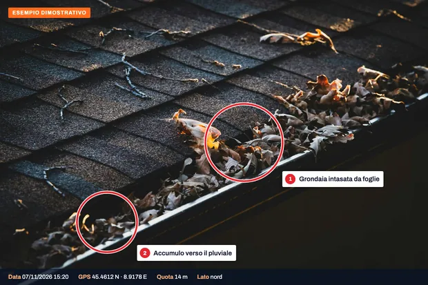
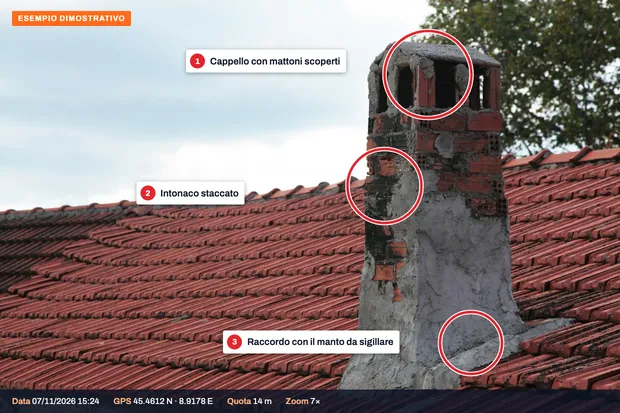
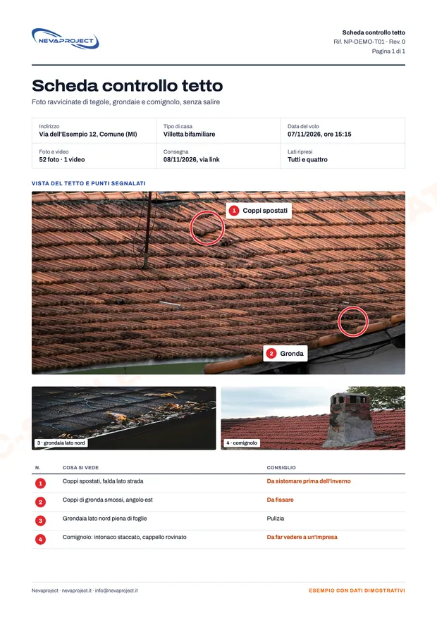

Grondaia Express, 80 €.
Il controllo veloce per case uni e bifamiliari entro 30 km dalla nostra base in provincia di Milano.
Il comune si può indicare nel messaggio: verifichiamo noi la distanza e la zona di volo.
80 €
- Grondaie, colmo e comignolo
- Da 15 a 25 foto ad alta risoluzione
- Consegna su chiavetta, sul posto
- Pagamento sul posto
Senza video né scheda. Per avere anche video e scheda c'è il controllo completo, da 190 €.
Cosa si vede.
Le cause dei problemi visibili dall'esterno, da ogni lato del tetto, comprese le parti che da terra restano nascoste.
- Tegole e coppi rotti o spostati
- Colmi, compluvi e scossaline
- Comignoli e canne fumarie: crepe, cappelli, sigillature
- Grondaie e pluviali intasati, piegati o staccati
- Lucernari e finestre da tetto
- Muschi, licheni e foglie accumulate
Come funziona.
Richiesta
Indirizzo e tipo di casa. Per la Grondaia Express basta il comune: verifichiamo noi la distanza e proponiamo un giorno.
Volo
Un giro completo attorno al tetto e passaggi ravvicinati su colmo, comignolo e grondaie.
Consegna
Con la Grondaia Express le foto su chiavetta si consegnano sul posto. Con il controllo completo arrivano entro 24 ore anche il video e una scheda di una pagina con i punti in cui si vedono danni o sporco.
Esempi di consegna.
Ecco cosa riceve. Clicchi su un'immagine per ingrandirla.

GrondaieFoglie e accumuli che da terra non si vedono.

ComignoliCappello, intonaco e raccordo con il manto, da vicino.

Scheda di una paginaCosa si vede e cosa sistemare, da girare all'impresa.


Esempi dimostrativi su foto d'archivio: indirizzi e dati sono a titolo illustrativo.
Prezzi.
Prezzi di partenza e finali, IVA non applicata (regime forfettario).
| Servizio | Prezzo |
|---|---|
| Grondaia Expresscasa uni o bifamiliare entro 30 km dalla base; foto su chiavetta | 80 € |
| Controllo completo, villettafoto, video e scheda di una pagina | da 190 € |
| Controllo completo, attività o piccolo condominioristoranti, agriturismi, B&B, palazzine | su preventivo |
- Dopo vento, grandine o neve vale il servizio danni maltempo, con consegna entro 24 ore.
- Trasferta inclusa fino a 60 km dalla base; oltre, su preventivo.
- Se il giorno fissato piove o c'è troppo vento, spostiamo il volo senza costi.
Per chi.
- Famiglie che vogliono sapere com'è messo il tetto prima dell'inverno
- Chi ha una seconda casa e non può controllarla di persona: le foto arrivano via link
- Ristoranti, agriturismi e B&B
- Piccoli condomini e palazzine
- Lattonieri e imprese che devono preparare un preventivo senza salire
Chi vola.
Dieci anni di voli
Oltre 3.000 impianti fotovoltaici ispezionati in tutta Italia, per aziende dell'energia e studi tecnici.
In regola con ENAC
Operatore registrato, pilota con attestato A2 e categoria Specific (STS). Ogni lavoro è verificato prima sulle zone di volo D-Flight e secondo le regole ENAC.
Voli assicurati
Polizza di responsabilità civile per i voli con drone.
Domande frequenti.
Cosa comprende la Grondaia Express?
Grondaie, colmo e comignolo di una casa uni o bifamiliare, con 15-25 foto consegnate su chiavetta e pagamento sul posto. Video e scheda sono compresi nel controllo completo, da 190 €.
Come si sa se il comune è entro i 30 km?
Contiamo la distanza dalla nostra base. Basta indicare il comune nel messaggio: se è più lontano, proponiamo il controllo completo.
Bisogna essere a casa?
Per la Grondaia Express sì, perché foto e pagamento si scambiano sul posto. Per il controllo completo basta che qualcuno ci indichi l'immobile: le foto arrivano anche via link.
Pulite anche le grondaie?
No, le fotografiamo. Con le foto il lattoniere o l'impresa sa già cosa troverà e può fare il preventivo.
Si vedono le infiltrazioni?
Si vedono le cause visibili dall'esterno: tegole rotte o spostate, scossaline sollevate, grondaie intasate. Le infiltrazioni nascoste sotto il manto richiedono altre indagini.